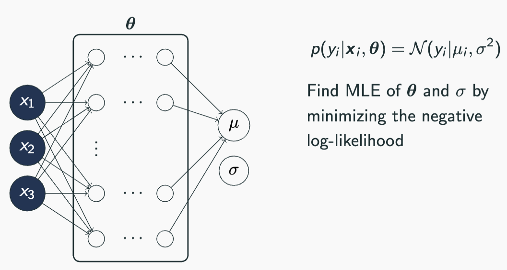
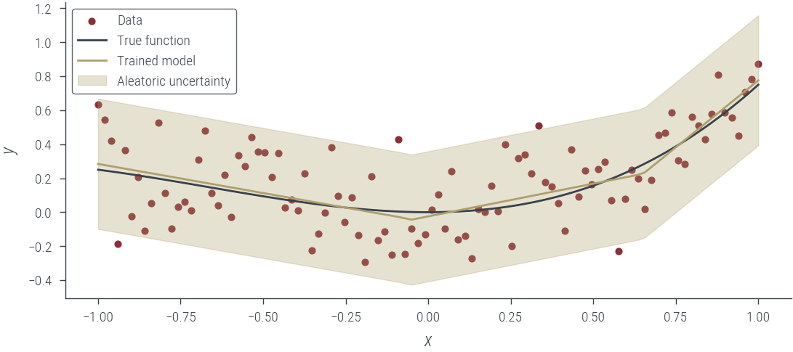
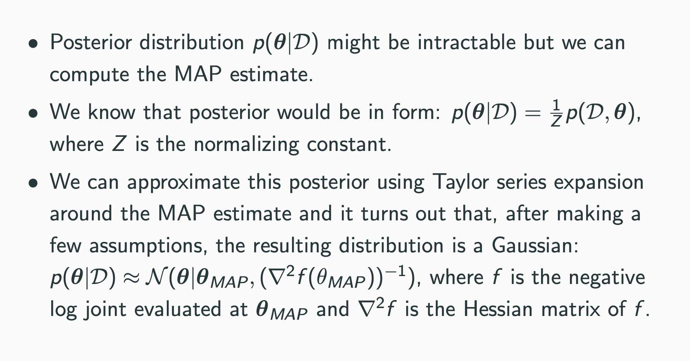
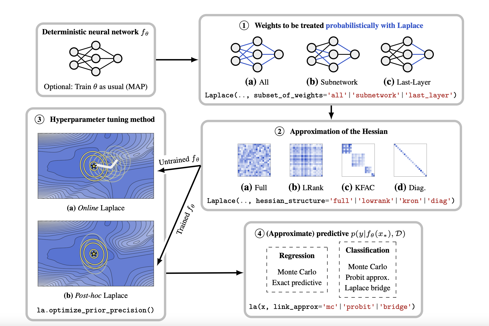

import torch
import numpy as np
import matplotlib.pyplot as plt
import pandas as pd
import jax.tree_util as jtu
%matplotlib inline
# Retina display
%config InlineBackend.figure_format = 'retina'
# PyTorch device CUDA0
device = torch.device("cuda:0" if torch.cuda.is_available() else "cpu")Capturing uncertainty in neural nets:
- aleatoric
- homoskedastic (fixed)
- homoskedastic (learnt)
- heteroskedastic
- epistemic uncertainty (Laplace approximation)
- both aleatoric and epistemic uncertainty
Imports
from tueplots import bundles
plt.rcParams.update(bundles.beamer_moml())
# Also add despine to the bundle using rcParams
plt.rcParams["axes.spines.right"] = False
plt.rcParams["axes.spines.top"] = False
# Increase font size to match Beamer template
plt.rcParams["font.size"] = 16
# Make background transparent
plt.rcParams["figure.facecolor"] = "none"Notation

Models capturing aleatoric uncertainty
Dataset containing homoskedastic noise
torch.manual_seed(42)
N = 100
x_lin = torch.linspace(-1, 1, N)
f = lambda x: 0.5 * x**2 + 0.25 * x**3
eps = torch.randn(N) * 0.2
y = f(x_lin) + eps
# Move to GPU
x_lin = x_lin.to(device)
y = y.to(device)# Plot data and true function
plt.plot(x_lin.cpu(), y.cpu(), "o", label="data")
plt.plot(x_lin.cpu(), f(x_lin).cpu(), label="true function")
plt.xlabel("x")
plt.ylabel("y")
plt.legend()<matplotlib.legend.Legend at 0x7faa2c06efa0>Case 1.1: Models assuming Homoskedastic noise
Case 1.1.1: Homoskedastic noise is fixed beforehand and not learned

class MeanEstimateNN(torch.nn.Module):
def __init__(self, n_hidden=10):
super().__init__()
self.fc1 = torch.nn.Linear(1, n_hidden)
self.fc2 = torch.nn.Linear(n_hidden, n_hidden)
self.fc3 = torch.nn.Linear(n_hidden, 1)
def forward(self, x):
x = self.fc1(x)
x = torch.relu(x)
x = self.fc2(x)
x = torch.relu(x)
mu_hat = self.fc3(x)
return mu_hatdef loss_homoskedastic_noise(model, x, y, params):
log_noise_std = params["log_noise_std"]
mu_hat = model(x).squeeze()
assert mu_hat.shape == y.shape
noise_std = torch.exp(log_noise_std).expand_as(mu_hat)
dist = torch.distributions.Normal(mu_hat, noise_std)
return -dist.log_prob(y).mean()homo_model_homo_noise_fixed = MeanEstimateNN().to(device)
homo_model_homo_noise_fixedMeanEstimateNN(
(fc1): Linear(in_features=1, out_features=10, bias=True)
(fc2): Linear(in_features=10, out_features=10, bias=True)
(fc3): Linear(in_features=10, out_features=1, bias=True)
)fixed_log_noise_std = torch.log(torch.tensor(0.5)).to(device)
params = {
"nn_params": homo_model_homo_noise_fixed.state_dict(),
"log_noise_std": fixed_log_noise_std,
}
loss_homoskedastic_noise(homo_model_homo_noise_fixed, x_lin[:, None], y, params)tensor(0.3774, device='cuda:0', grad_fn=<NegBackward0>)def plot_results(y_hat, epistemic_std=None, aleatoric_std=None, model_name=""):
plt.scatter(x_lin.cpu(), y.cpu(), s=10, color="C0", label="Data")
plt.plot(x_lin.cpu(), f(x_lin.cpu()), color="C1", label="True function")
plt.plot(x_lin.cpu(), y_hat.cpu(), color="C2", label=model_name)
if epistemic_std is not None:
plt.fill_between(
x_lin.cpu(),
(y_hat - 2 * epistemic_std).cpu(),
(y_hat + 2 * epistemic_std).cpu(),
alpha=0.3,
color="C3",
label="Epistemic uncertainty",
)
if aleatoric_std is not None:
plt.fill_between(
x_lin.cpu(),
(y_hat - 2 * aleatoric_std).cpu(),
(y_hat + 2 * aleatoric_std).cpu(),
alpha=0.3,
color="C2",
label="Aleatoric uncertainty",
)
plt.xlabel("$x$")
plt.ylabel("$y$")
plt.legend()with torch.no_grad():
y_hat = homo_model_homo_noise_fixed(x_lin[:, None]).squeeze()
plot_results(
y_hat, aleatoric_std=torch.exp(fixed_log_noise_std), model_name="Untrained model"
)findfont: Font family ['cursive'] not found. Falling back to DejaVu Sans.
findfont: Generic family 'cursive' not found because none of the following families were found: Apple Chancery, Textile, Zapf Chancery, Sand, Script MT, Felipa, Comic Neue, Comic Sans MS, cursivedef train_fn(model, loss_func, params, x, y, n_epochs=1000, lr=0.01):
parameter_leaves = jtu.tree_leaves(params)
optimizer = torch.optim.Adam(parameter_leaves, lr=lr)
for epoch in range(n_epochs):
optimizer.zero_grad()
loss = loss_func(model, x, y, params)
loss.backward()
optimizer.step()
# Print every 10 epochs
if epoch % 50 == 0:
print(f"Epoch {epoch}: loss {loss.item():.3f}")
return loss.item()homo_model_homo_noise_fixed = MeanEstimateNN().to(device)
params = {
"nn_params": list(homo_model_homo_noise_fixed.parameters()),
"log_noise_std": fixed_log_noise_std,
}
train_fn(
homo_model_homo_noise_fixed,
loss_homoskedastic_noise,
params,
x_lin[:, None],
y,
n_epochs=1000,
lr=0.001,
)Epoch 0: loss 0.451
Epoch 50: loss 0.361
Epoch 100: loss 0.343
Epoch 150: loss 0.332
Epoch 200: loss 0.321
Epoch 250: loss 0.313
Epoch 300: loss 0.308
Epoch 350: loss 0.305
Epoch 400: loss 0.303
Epoch 450: loss 0.303
Epoch 500: loss 0.302
Epoch 550: loss 0.302
Epoch 600: loss 0.301
Epoch 650: loss 0.301
Epoch 700: loss 0.301
Epoch 750: loss 0.301
Epoch 800: loss 0.300
Epoch 850: loss 0.300
Epoch 900: loss 0.300
Epoch 950: loss 0.2990.29893454909324646with torch.no_grad():
y_hat = homo_model_homo_noise_fixed(x_lin[:, None]).squeeze()
aleatoric_std = torch.exp(fixed_log_noise_std)
plot_results(y_hat, aleatoric_std=aleatoric_std, model_name="Trained model")Case 1.1.2: Homoskedastic noise is learnt from the data

The model is the same as in case 1.1.1, but the noise is learned from the data.
homo_model_homo_noise_learnable = MeanEstimateNN().to(device)
log_noise_std = torch.nn.Parameter(torch.tensor(0.0).to(device))
homo_model_homo_noise_learnableMeanEstimateNN(
(fc1): Linear(in_features=1, out_features=10, bias=True)
(fc2): Linear(in_features=10, out_features=10, bias=True)
(fc3): Linear(in_features=10, out_features=1, bias=True)
)# Plot the untrained model
with torch.no_grad():
y_hat = homo_model_homo_noise_learnable(x_lin[:, None]).squeeze()
aleatoric_std = torch.exp(log_noise_std)
plot_results(y_hat, aleatoric_std=aleatoric_std, model_name="Untrained model")# Train the model
homo_model_homo_noise_learnable = MeanEstimateNN().to(device)
params = {
"nn_params": list(homo_model_homo_noise_learnable.parameters()),
"log_noise_std": log_noise_std,
}
train_fn(
homo_model_homo_noise_learnable,
loss_homoskedastic_noise,
params,
x_lin[:, None],
y,
n_epochs=1000,
lr=0.01,
)Epoch 0: loss 0.993
Epoch 50: loss 0.478
Epoch 100: loss 0.074
Epoch 150: loss -0.167
Epoch 200: loss -0.231
Epoch 250: loss -0.235
Epoch 300: loss -0.235
Epoch 350: loss -0.235
Epoch 400: loss -0.235
Epoch 450: loss -0.235
Epoch 500: loss -0.235
Epoch 550: loss -0.235
Epoch 600: loss -0.235
Epoch 650: loss -0.235
Epoch 700: loss -0.235
Epoch 750: loss -0.235
Epoch 800: loss -0.235
Epoch 850: loss -0.235
Epoch 900: loss -0.235
Epoch 950: loss -0.235-0.2348887175321579# Plot the trained model
with torch.no_grad():
y_hat = homo_model_homo_noise_learnable(x_lin[:, None]).squeeze()
aleatoric_std = torch.exp(log_noise_std)
plot_results(y_hat, aleatoric_std=aleatoric_std, model_name="Trained model")
Case 1.2: Models assuming heteroskedastic noise

class HeteroskedasticNN(torch.nn.Module):
def __init__(self, n_hidden=10):
super().__init__()
self.fc1 = torch.nn.Linear(1, n_hidden)
self.fc2 = torch.nn.Linear(n_hidden, n_hidden)
self.fc3 = torch.nn.Linear(n_hidden, 2) # we learn both mu and log_noise_std
def forward(self, x):
x = self.fc1(x)
x = torch.relu(x)
x = self.fc2(x)
x = torch.relu(x)
z = self.fc3(x)
mu_hat = z[:, 0]
log_noise_std = z[:, 1]
return mu_hat, log_noise_stdhetero_model_homo_noise_learnable = HeteroskedasticNN().to(device)
hetero_model_homo_noise_learnableHeteroskedasticNN(
(fc1): Linear(in_features=1, out_features=10, bias=True)
(fc2): Linear(in_features=10, out_features=10, bias=True)
(fc3): Linear(in_features=10, out_features=2, bias=True)
)# Plot the untrained model
with torch.no_grad():
y_hat, log_noise_std = hetero_model_homo_noise_learnable(x_lin[:, None])
aleatoric_std = torch.exp(log_noise_std)
plot_results(y_hat, aleatoric_std=aleatoric_std, model_name="Untrained model")def loss_heteroskedastic(model, x, y, params):
mu_hat, log_noise_std = model(x)
noise_std = torch.exp(log_noise_std)
dist = torch.distributions.Normal(mu_hat, noise_std)
return -dist.log_prob(y).mean()
params = list(hetero_model_homo_noise_learnable.parameters())
train_fn(
hetero_model_homo_noise_learnable,
loss_heteroskedastic,
params,
x_lin[:, None],
y,
n_epochs=1000,
lr=0.01,
)Epoch 0: loss 0.947
Epoch 50: loss -0.185
Epoch 100: loss -0.214
Epoch 150: loss -0.228
Epoch 200: loss -0.244
Epoch 250: loss -0.258
Epoch 300: loss -0.265
Epoch 350: loss -0.266
Epoch 400: loss -0.271
Epoch 450: loss -0.287
Epoch 500: loss -0.329
Epoch 550: loss -0.333
Epoch 600: loss -0.338
Epoch 650: loss -0.341
Epoch 700: loss -0.342
Epoch 750: loss -0.344
Epoch 800: loss -0.345
Epoch 850: loss -0.343
Epoch 900: loss -0.345
Epoch 950: loss -0.349-0.347493439912796# Plot the trained model
with torch.no_grad():
y_hat, log_noise_std = hetero_model_homo_noise_learnable(x_lin[:, None])
aleatoric_std = torch.exp(log_noise_std)
plot_results(y_hat, aleatoric_std=aleatoric_std, model_name="Untrained model")Data with heteroskedastic noise
torch.manual_seed(42)
N = 100
x_lin = torch.linspace(-1, 1, N)
f = lambda x: 0.5 * x**2 + 0.25 * x**3
eps = torch.randn(N) * (0.1 + 0.4 * x_lin)
y = f(x_lin) + eps
# Move to GPU
x_lin = x_lin.to(device)
y = y.to(device)
# Plot data and true function
plt.plot(x_lin.cpu(), y.cpu(), "o", label="data")
plt.plot(x_lin.cpu(), f(x_lin).cpu(), label="true function")
plt.xlabel("x")
plt.ylabel("y")
plt.legend()<matplotlib.legend.Legend at 0x7faa2587bb20>hetero_model_homo_noise_fixed = MeanEstimateNN().to(device)
fixed_log_noise_std = torch.log(torch.tensor(0.5)).to(device)
# Plot the untrained model
with torch.no_grad():
y_hat = hetero_model_homo_noise_fixed(x_lin[:, None]).squeeze()
aleatoric_std = torch.exp(fixed_log_noise_std)
plot_results(y_hat, aleatoric_std=aleatoric_std, model_name="Untrained model")params = {
"nn_params": list(hetero_model_homo_noise_fixed.parameters()),
"log_noise_std": fixed_log_noise_std,
}
train_fn(
hetero_model_homo_noise_fixed,
loss_homoskedastic_noise,
params,
x_lin[:, None],
y,
n_epochs=1000,
lr=0.001,
)
# Plot the trained model
with torch.no_grad():
y_hat = hetero_model_homo_noise_fixed(x_lin[:, None]).squeeze()
aleatoric_std = torch.exp(fixed_log_noise_std)
plot_results(y_hat, aleatoric_std=aleatoric_std, model_name="Trained model")Epoch 0: loss 0.404
Epoch 50: loss 0.393
Epoch 100: loss 0.386
Epoch 150: loss 0.376
Epoch 200: loss 0.365
Epoch 250: loss 0.355
Epoch 300: loss 0.346
Epoch 350: loss 0.339
Epoch 400: loss 0.335
Epoch 450: loss 0.332
Epoch 500: loss 0.331
Epoch 550: loss 0.330
Epoch 600: loss 0.329
Epoch 650: loss 0.329
Epoch 700: loss 0.329
Epoch 750: loss 0.328
Epoch 800: loss 0.328
Epoch 850: loss 0.328
Epoch 900: loss 0.328
Epoch 950: loss 0.327# Now, fit the homoskedastic model with learned noise
homo_model_hetero_noise_learnable = MeanEstimateNN().to(device)
log_noise_std = torch.nn.Parameter(torch.tensor(0.0).to(device))
# Plot the untrained model
with torch.no_grad():
y_hat = homo_model_hetero_noise_learnable(x_lin[:, None]).squeeze()
aleatoric_std = torch.exp(log_noise_std)
plot_results(y_hat, aleatoric_std=aleatoric_std, model_name="Untrained model")
# Train the model
params = {
"nn_params": list(homo_model_hetero_noise_learnable.parameters()),
"log_noise_std": log_noise_std,
}
train_fn(
homo_model_hetero_noise_learnable,
loss_homoskedastic_noise,
params,
x_lin[:, None],
y,
n_epochs=1000,
lr=0.01,
)
# Plot the trained model
with torch.no_grad():
y_hat = homo_model_hetero_noise_learnable(x_lin[:, None]).squeeze()
aleatoric_std = torch.exp(log_noise_std)
plot_results(y_hat, aleatoric_std=aleatoric_std, model_name="Trained model")Epoch 0: loss 0.980
Epoch 50: loss 0.487
Epoch 100: loss 0.105
Epoch 150: loss -0.137
Epoch 200: loss -0.225
Epoch 250: loss -0.245
Epoch 300: loss -0.242
Epoch 350: loss -0.248
Epoch 400: loss -0.254
Epoch 450: loss -0.253
Epoch 500: loss -0.252
Epoch 550: loss -0.254
Epoch 600: loss -0.251
Epoch 650: loss -0.255
Epoch 700: loss -0.255
Epoch 750: loss -0.254
Epoch 800: loss -0.252
Epoch 850: loss -0.254
Epoch 900: loss -0.250
Epoch 950: loss -0.255# Now, fit the heteroskedastic model
hetero_model_hetero_noise_learnable = HeteroskedasticNN().to(device)
# Plot the untrained model
with torch.no_grad():
y_hat, log_noise_std = hetero_model_hetero_noise_learnable(x_lin[:, None])
aleatoric_std = torch.exp(log_noise_std)
plot_results(y_hat, aleatoric_std=aleatoric_std, model_name="Untrained model")# Train the model
params = list(hetero_model_hetero_noise_learnable.parameters())
train_fn(
hetero_model_hetero_noise_learnable,
loss_heteroskedastic,
params,
x_lin[:, None],
y,
n_epochs=1000,
lr=0.01,
)Epoch 0: loss 0.857
Epoch 50: loss -0.142
Epoch 100: loss -0.373
Epoch 150: loss -0.456
Epoch 200: loss -0.541
Epoch 250: loss -0.577
Epoch 300: loss -0.594
Epoch 350: loss -0.603
Epoch 400: loss -0.608
Epoch 450: loss -0.611
Epoch 500: loss -0.612
Epoch 550: loss -0.622
Epoch 600: loss -0.623
Epoch 650: loss -0.621
Epoch 700: loss -0.624
Epoch 750: loss -0.632
Epoch 800: loss -0.628
Epoch 850: loss -0.637
Epoch 900: loss -0.638
Epoch 950: loss -0.636-0.6415937542915344# Plot the trained model
with torch.no_grad():
y_hat, log_noise_std = hetero_model_hetero_noise_learnable(x_lin[:, None])
aleatoric_std = torch.exp(log_noise_std)
plot_results(y_hat, aleatoric_std=aleatoric_std, model_name="Trained model")Epistemic Uncertainty: Bayesian NN with Laplace approximation
MAP estimation
def negative_log_prior(model):
log_prior = 0
for param in model.parameters():
log_prior += torch.distributions.Normal(0, 1).log_prob(param).sum()
return -log_prior
def negative_log_likelihood(model, x, y, log_noise_std):
mu_hat = model(x).squeeze()
assert mu_hat.shape == y.shape
noise_std = torch.exp(log_noise_std).expand_as(mu_hat)
dist = torch.distributions.Normal(mu_hat, noise_std)
return -dist.log_prob(y).sum()
def negative_log_joint(model, x, y, log_noise_std):
return negative_log_likelihood(model, x, y, log_noise_std) + negative_log_prior(
model
)def custom_loss_fn(model, x, y, params):
log_noise_std = params["log_noise_std"]
return negative_log_joint(model, x, y, log_noise_std)
torch.manual_seed(3)
laplace_model = MeanEstimateNN().to(device)
fixed_log_noise_std = torch.log(torch.tensor(0.2)).to(device)
params = {
"log_noise_std": fixed_log_noise_std,
"nn_params": list(laplace_model.parameters()),
}
train_fn(
laplace_model,
custom_loss_fn,
params,
x_lin[:, None],
y,
n_epochs=1000,
lr=0.01,
)Epoch 0: loss 439.902
Epoch 50: loss 138.376
Epoch 100: loss 131.914
Epoch 150: loss 131.173
Epoch 200: loss 130.548
Epoch 250: loss 126.990
Epoch 300: loss 125.752
Epoch 350: loss 125.163
Epoch 400: loss 123.350
Epoch 450: loss 122.710
Epoch 500: loss 122.472
Epoch 550: loss 122.251
Epoch 600: loss 122.128
Epoch 650: loss 122.113
Epoch 700: loss 121.922
Epoch 750: loss 121.868
Epoch 800: loss 121.792
Epoch 850: loss 121.794
Epoch 900: loss 121.696
Epoch 950: loss 121.726121.6390151977539with torch.no_grad():
y_hat = laplace_model(x_lin[:, None]).squeeze()
aleatoric_std = torch.exp(fixed_log_noise_std)
plot_results(y_hat, aleatoric_std=aleatoric_std, model_name="MAP estimate")
What weighs to consider?

Goal: Compute the Hessian of the negative log joint wrt the last layer weights
Challenge: The negative log joint is a function of all the weights, not just the last layer weights
Aside on functools.partial
The functools module is for higher-order functions: functions that act on or return other functions. In general, any callable object can be treated as a function for the purposes of this module.
print(int("1001", base=2), int("1001", base=4), int("1001"))
from functools import partial
base_two = partial(int, base=2)
base_two.__doc__ = "Convert base 2 string to an int."
print(base_two)
print(base_two.__doc__)
print(help(base_two))
print(base_two("1001"))9 65 1001
functools.partial(<class 'int'>, base=2)
Convert base 2 string to an int.
Help on partial:
functools.partial(<class 'int'>, base=2)
Convert base 2 string to an int.
None
9A primer on functional calls to PyTorch
tiny_model = torch.nn.Linear(3, 1)
input = torch.randn(2, 3)
target = torch.randn(2, 1)
tiny_modelLinear(in_features=3, out_features=1, bias=True)output = tiny_model(input)
outputtensor([[ 0.0756],
[-0.2420]], grad_fn=<AddmmBackward0>)loss_fn = torch.nn.MSELoss()
loss = loss_fn(output, target)
loss.backward()
grad_dict = {"weight": tiny_model.weight.grad, "bias": tiny_model.bias.grad}
grad_dict{'weight': tensor([[ 2.2469, -1.7073, -0.6623]]), 'bias': tensor([-1.9448])}params = dict(tiny_model.named_parameters())
output = torch.func.functional_call(tiny_model, params, input)
outputtensor([[ 0.0756],
[-0.2420]], grad_fn=<AddmmBackward0>)def custom_loss_fn(params):
output = torch.func.functional_call(tiny_model, params, input)
return loss_fn(output, target)
torch.func.grad(custom_loss_fn, argnums=0)(params){'weight': tensor([[ 2.2469, -1.7073, -0.6623]], grad_fn=<TBackward0>),
'bias': tensor([-1.9448], grad_fn=<ViewBackward0>)}It is also possible to get the gradients/hessian with respect to only a few weights.
def custom_loss_fn(partial_params, params):
params.update(partial_params)
output = torch.func.functional_call(tiny_model, params, input)
return loss_fn(output, target)
partial_params = {"bias": params["bias"]}
torch.func.grad(custom_loss_fn, argnums=0)(partial_params, params){'bias': tensor([-1.9448], grad_fn=<ViewBackward0>)}Last layer Laplace approximation
def functional_negative_log_prior(partial_params):
partial_parameter_leaves = jtu.tree_leaves(partial_params)
log_prior = 0.0
for param in partial_parameter_leaves:
log_prior += torch.distributions.Normal(0, 1).log_prob(param).sum()
return -log_prior
def functional_negative_log_likelihood(
partial_params, params, model, x, y, log_noise_std
):
params.update(partial_params)
mu_hat = torch.func.functional_call(model, params, x).squeeze()
assert mu_hat.shape == y.shape, f"{mu_hat.shape} != {y.shape}"
noise_std = torch.exp(log_noise_std).expand_as(mu_hat)
dist = torch.distributions.Normal(mu_hat, noise_std)
return -dist.log_prob(y).sum()
def functional_negative_log_joint(partial_params, params, model, x, y, log_noise_std):
return functional_negative_log_likelihood(
partial_params, params, model, x, y, log_noise_std
) + functional_negative_log_prior(partial_params)params = dict(laplace_model.named_parameters())
params.keys()dict_keys(['fc1.weight', 'fc1.bias', 'fc2.weight', 'fc2.bias', 'fc3.weight', 'fc3.bias'])partial_params = {"fc3.weight": params["fc3.weight"]}print("Full negative log prior", negative_log_prior(laplace_model))
print(
"Partial negative log prior",
functional_negative_log_prior(partial_params),
)Full negative log prior tensor(135.0255, device='cuda:0', grad_fn=<NegBackward0>)
Partial negative log prior tensor(10.9603, device='cuda:0', grad_fn=<NegBackward0>)print(
"Full negative log likelihood",
negative_log_likelihood(laplace_model, x_lin[:, None], y, fixed_log_noise_std),
)
print(
"Partial negative log likelihood",
functional_negative_log_likelihood(
partial_params, params, laplace_model, x_lin[:, None], y, fixed_log_noise_std
),
)Full negative log likelihood tensor(-13.3980, device='cuda:0', grad_fn=<NegBackward0>)
Partial negative log likelihood tensor(-13.3980, device='cuda:0', grad_fn=<NegBackward0>)print(
"Full negative log joint",
negative_log_joint(laplace_model, x_lin[:, None], y, fixed_log_noise_std),
)
print(
"Partial negative log joint",
functional_negative_log_joint(
partial_params, params, laplace_model, x_lin[:, None], y, fixed_log_noise_std
),
)Full negative log joint tensor(121.6275, device='cuda:0', grad_fn=<AddBackward0>)
Partial negative log joint tensor(-2.4377, device='cuda:0', grad_fn=<AddBackward0>)map_params = dict(laplace_model.named_parameters())
last_layer_params = {"fc3.weight": map_params["fc3.weight"]}
partial_func = partial(
functional_negative_log_joint,
params=map_params,
model=laplace_model,
x=x_lin[:, None],
y=y,
log_noise_std=fixed_log_noise_std,
)
H = torch.func.hessian(partial_func)(last_layer_params)["fc3.weight"]["fc3.weight"]
print(H.shape)
H = H[0, :, 0, :]
print(H.shape)torch.Size([1, 10, 1, 10])
torch.Size([10, 10])import seaborn as sns
with torch.no_grad():
cov = torch.inverse(H + 1e-3 * torch.eye(H.shape[0]).to(device))
plt.figure(figsize=(15, 3))
sns.heatmap(cov.cpu().numpy(), annot=True, fmt=".2f", cmap="viridis")<Axes: >
laplace_posterior = torch.distributions.MultivariateNormal(
last_layer_params["fc3.weight"].ravel(), cov
)
last_layer_weights_samples = laplace_posterior.sample((501,))[..., None]
last_layer_weights_samples.shapetorch.Size([501, 10, 1])def forward_pass(last_layer_weight, params):
params.update({"fc3.weight": last_layer_weight.reshape(1, -1)})
return torch.func.functional_call(laplace_model, params, x_lin[:, None]).squeeze()
forward_pass(last_layer_weights_samples[0], params).shapetorch.Size([100])mc_outputs = torch.vmap(lambda x: forward_pass(x, params))(last_layer_weights_samples)
print(mc_outputs.shape)torch.Size([501, 100])mean_mc_outputs = mc_outputs.mean(0)
std_mc_outputs = mc_outputs.std(0)
mean_mc_outputs.shape, std_mc_outputs.shape(torch.Size([100]), torch.Size([100]))with torch.no_grad():
epistemic_std = std_mc_outputs
aleatoric_std = torch.exp(fixed_log_noise_std) + epistemic_std
plot_results(
mean_mc_outputs,
epistemic_std=epistemic_std,
aleatoric_std=aleatoric_std,
model_name="Laplace approximation",
)with torch.no_grad():
epistemic_std = std_mc_outputs
aleatoric_std = torch.exp(fixed_log_noise_std) + epistemic_std
plot_results(
mean_mc_outputs,
epistemic_std=None,
aleatoric_std=None,
model_name="Laplace approximation",
)
for i in range(10):
plt.plot(
x_lin.cpu(),
mc_outputs[i].cpu(),
alpha=0.3,
color="C2",
label="Laplace approximation",
)